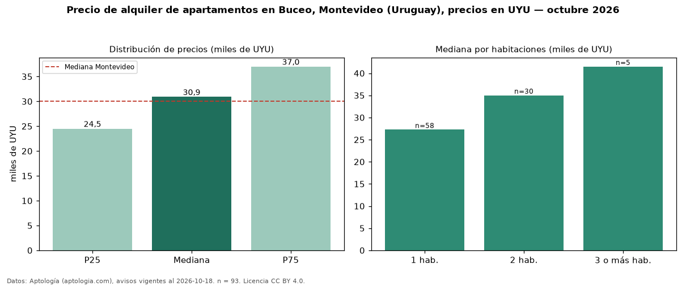

Precio de alquiler de apartamentos en Buceo, Montevideo (Uruguay), precios en UYU — octubre 2026
En Buceo, Montevideo (Uruguay), la mediana de canon mensual de apartamentos es UYU 30.900, según 93 avisos vigentes. Prácticamente coincide con la mediana de Montevideo para apartamentos (UYU 30.000). Por metro cuadrado, la mediana es UYU 593/m² al mes (n = 91 avisos con área), 1 % por encima de Montevideo (UYU 587/m²). El área mediana anunciada es 49 m². El segmento con más oferta es el de 1 habitación (58 avisos, mediana UYU 27.250); pasar de 1 habitación a 3 o más habitaciones cambia la mediana +52 %. La cuota de mantenimiento o condominio mediana declarada es UYU 5.000 al mes (n = 79), aparte del canon. Por precio mediano es el puesto 5 de 18 barrios de Montevideo con al menos 30 avisos de apartamentos en alquiler (UYU): en la franja media. La mitad central de los avisos va de UYU 24.500 a UYU 37.000 (razón 1,5), una dispersión moderada. Datos: Aptología (aptologia.com), CC BY 4.0 — https://www.aptologia.com/uy/alquiler/montevideo/buceo. Archivos: PDF, CSV con las cifras y gráfica PNG.

| Avisos únicos | 93 |
|---|---|
| Percentil 25 | COP 24.500 |
| Mediana | COP 30.900 |
| Percentil 75 | COP 37.000 |
| Mediana por m² | COP 593 |
Fuente: avisos vigentes de portales inmobiliarios recopilados por Aptología, deduplicados (mínimo 30 avisos únicos por celda). Precios pedidos, no cerrados. Fecha: 2026-10-18.